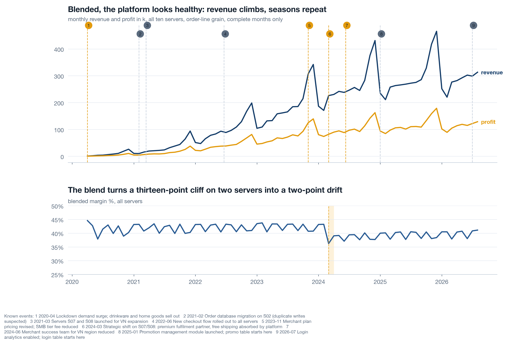
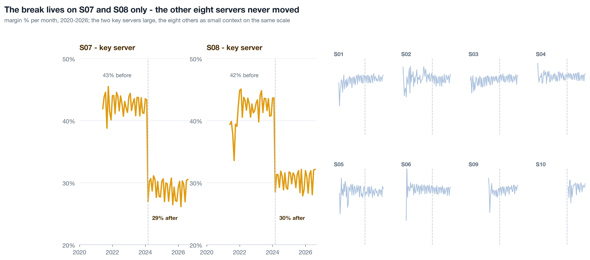
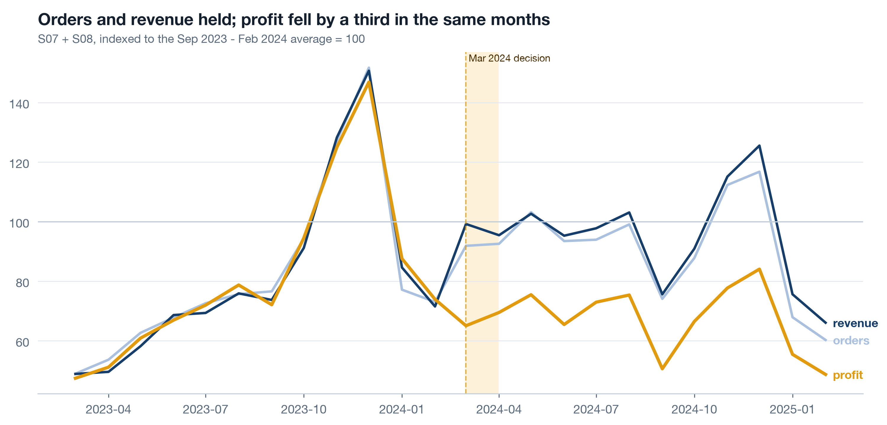
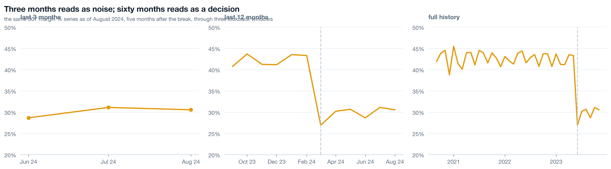
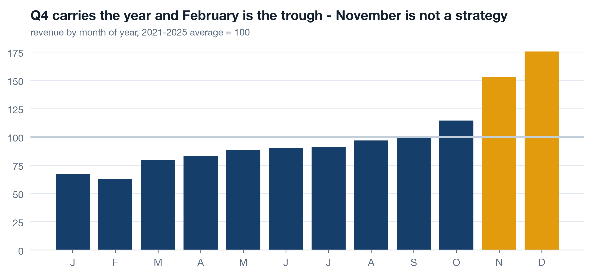
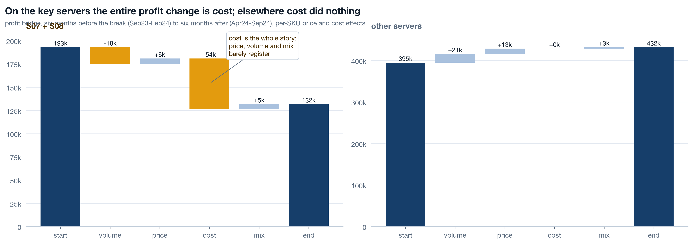
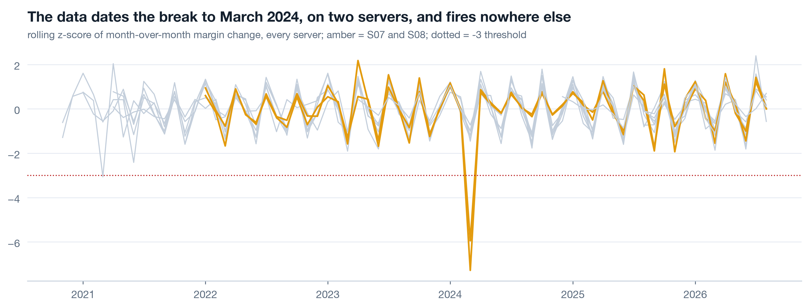
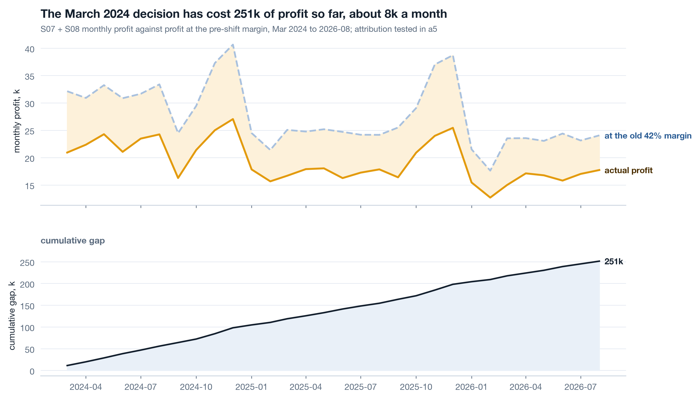

Where a2 sits
a1 left a map and a four-line hand-off note: dedupe on, guests excluded and stated, short windows caveated, events overlaid. a2 starts from that note and answers the first of the nine angles - the transaction trend and the 2024 break - then prices the break so the chairman pages have a number to quote. a3 walks the product hierarchy and the baskets, a4 measures merchants and stores, a5 does customers, promotions and the data gaps. Everything loads through analysis/lib.py with dedupe=True; work along in notebooks/a2_follow_the_margin.ipynb.
Whole platform first, then one panel per server 13 min live
Blends hide. Ten servers averaged into one line lose a few margin points and the line still looks like a healthy business drifting. The same series drawn as ten small panels shows two of them stepping down twelve points in one month. The order matters: the whole first, so the reader knows the company is not on fire, then the un-blend, so they see exactly where it is smouldering.
Live The monthly helper 5 min▶
One helper, lib.monthly, returns revenue, cost, profit, margin, orders, lines, units and identified customers per month, for the whole frame or for any list of keys. Every long series in the track comes out of it, so the definition of "a month of margin" lives in one place. Two rules ride along. Load with dedupe=True, because a1 found S02 duplicating lines in 2021-H1. And never chart the partial current month as a value: the dataset ends 2026-09-07, so September 2026 has a week of orders, and a week drawn next to full months looks like a collapse.

Read the whole before the parts. Revenue climbs, the Q4 peaks repeat, and the blended margin slides a few points from 2024. Nothing here says crisis, and a chairman who sees only this chart is right to feel calm. The next chart takes the calm away with the same numbers.
Live Small multiples by server 5 min▶
Same helper, one extra key. Ten panels, shared axes so the eye compares heights honestly, key servers in amber, a faint dashed line at March 2024 on every panel so the reader can see that eight of them do nothing there. Shared y-limits are the whole trick: let matplotlib autoscale each panel and every server looks like it has a dramatic story.

Self-study Overlay what you know 3 min▶
lib.annotate_events draws every row of known_events as a thin dashed line with a short label - amber for business events, faint for technical ones. It goes on every long series, not just the one where you expect a bend, for a plain reason: the first thing a reader does when a line bends is ask "what happened there?", and an analyst who has to look it up loses the room. The team's memory is data. Printwell keeps nine rows of it, which a1 filed as a gap; until there is a real event log, those nine lines are the best context the company has, and they belong on the chart rather than in a footnote.
Two habits make the overlay honest. Filter by scope when a chart is about one server, using scope_filter, so platform-wide events and that server's events show and other servers' events do not. And never let an overlay do the arguing: the line marks a date, the bridge in Part 3 names the mechanism, and only the two together make a claim.
Volume held, margin fell - and the lookback trap 7 min live
The chairman's first question is always "did we sell less?" On S07 and S08 the answer is no. Orders and revenue after March 2024 sit within a few percent of the six months before; profit fell by nearly a third. Say that in one indexed picture, then show what the same number looks like through a three-month window, because a three-month window is exactly what the weekly dashboard was showing while this happened.
Live Index to the six months before 3 min▶
Index every series to the average of September 2023 through February 2024 = 100. Indexing puts orders, revenue and profit on one axis so the reader sees them diverge; the six-month base smooths a single odd month out of the denominator. Shade March 2024 so the eye lands where the story starts.

Print the three-month comparison as a table under the chart. A chart persuades; a table of four rows is what gets pasted into the email that follows. Both come from the same key frame, so they cannot disagree.
Live Three windows on one number 4 min▶
Take the S07 margin series as of August 2024, five months after the break, and draw it three times: the last three months, the last twelve, the full history. Same numbers, same axis limits. The three-month view is a wobble around 29. The twelve-month view is a step. The full view is a cliff with four flat years in front of it. Anyone running the business off a trailing-quarter dashboard in 2024 saw the first panel and was right, from inside that window, to see nothing.

Now do it yourself, on the real monthly numbers the notebook exports. The widget below draws the course dataset, not a model. Change data-series to S08, S03 or platform in the page source to repeat the exercise on a second hit, a null server and the blend.
Self-study Seasonality so November is not mistaken for strategy 3 min▶
Printwell's revenue by month of year, averaged over the five complete years 2021-2025 and indexed to 100: Q4 carries the year and February is the trough. This chart exists so that two mistakes cannot be made later. Nobody credits a Q4 initiative for a Q4 peak that happens every year, and nobody blames a February dip on a January decision. It also explains the volume term of the bridge in Part 3: comparing Sep-Feb with Apr-Sep bakes in a seasonal difference, and the same difference shows up on the servers that had no decision, which is how you know it is season and not the decision.

Name the mechanism: the bridge and the change-point 11 min live
Decompose before you narrate. Profit change between two periods is volume plus price plus cost plus mix, and naming the term comes before naming a cause. On S07 and S08 between Sep23-Feb24 and Apr24-Sep24 the terms are volume -18k, price +6k, cost -54k, mix +5k. On every other server the cost term is exactly zero. That is not a market moving; that is someone changing what an order costs to fulfil.
Live Per-SKU rates or the mix term is a lie 5 min▶
The tempting shortcut is a blended bridge: average price per unit and average cost per unit for each period, times units. It is quick and it is wrong in a specific way. If price and cost effects are computed on blended rates, then volume + price + cost equals the whole profit change by construction, and mix comes out as exactly zero every time. A term that is zero by algebra is not a finding; it is a column you forgot to compute. lib.margin_bridge computes price and cost per SKU, over the SKUs sold in both periods, at period-b units, and lets mix be the remainder: composition shifts and SKUs that appear in only one period. On S07 and S08 mix is +5k, small but real, which is what a mix term is supposed to look like when nothing happened to mix.

| Term | S07 + S08 | Other servers | Reading |
|---|---|---|---|
| start | 193k | 395k | profit, Sep23-Feb24 |
| volume | -18k | +21k | seasonal, similar shape on both groups |
| price | +6k | +13k | prices did nothing unusual |
| cost | -54k | 0 | the whole story, and only here |
| mix | +5k | +3k | small and real, as a mix term should be |
| end | 132k | 432k | profit, Apr24-Sep24 |
Price did nothing, mix did little, volume was seasonal and moved the same way on both groups. Cost is the term, and it is confined to two servers. known_events has a candidate dated 2024-03-01. The bridge does not prove the event caused the cost; it proves that whatever happened was a cost change and not a demand change, which rules out most of the explanations the room will offer.
Live Let the data date the break 4 min▶
The bridge needs you to choose the periods, and choosing them with the event date in hand is a small circularity. So run a detector that has never heard of March 2024: the month-over-month change in margin per server, standardised against the trailing twelve months of its own changes, shifted one month so the month under test does not sit in its own baseline. A step shows as one large negative z followed by nothing, because after the step the changes are small again.

The detector is validated on its nulls as much as its hits. Eight servers took no decision, and eight servers produce no spike beyond noise - that is what makes the two amber spikes evidence rather than decoration. A detector that fires everywhere is a random number generator with a title. The one extra hit it does raise, S02 in 2021-03, is the duplicate-load defect from a1 leaking into margin, which is a second correct answer, not a false alarm.
.shift(1) is not cosmetic. Without it the month being tested is part of its own mean and standard deviation, a big step inflates its own baseline, and the z-score shrinks toward respectability. Detectors that include the observation in the null are the most common reason a real break scores only -2.
Self-study Read fifty raw rows 3 min▶
Before trusting a cost story, read the raw lines. Pull fifty rows from S07 after March 2024 and fifty from before, same SKUs where you can, and look at unit_cost with your own eyes. Ask what it actually is. In many warehouses "unit cost" is a live supplier cost that changes when the supplier does; in many others it is a standard cost re-allocated once a year by finance, and a step in it means an accounting decision, not a fulfilment one. The bridge cannot tell those apart. Fifty rows and one question to whoever owns the column usually can.
a1 already filed the answer for Printwell: cost is a unit constant per SKU in dim_product, so the 2024 step is a change to what the platform books per unit, and there is no fulfilment cost per order anywhere in the data. That is why c3 recommends collecting one. Reading rows is how you find out what your aggregate is made of; it takes ten minutes and it has saved more analyses than any model.
Price the decision, then export 6 min live
A margin drop is an abstraction. A number of profit foregone is a decision-sized fact, and it needs exactly one stated assumption to compute: that the pre-shift margin would have held. Take the twelve months to February 2024 on S07 and S08, get their margin, apply it to every month of revenue since March 2024, and the gap between that counterfactual and actual profit is the running price of the decision.
Live The running price 4 min▶

State the assumption in the caption and the chart title, every time: this is what profit would have been had the margin held, and holding the margin is exactly the thing in question. Whether the cost change also cost customers is a different question with a different method - a5 tests it with cohorts and finds the repeat rate on these servers fell two quarters later - so the 251k is a floor, not an estimate of total damage, and the page says so. Revenue on the key servers went 686k in 2023 to 884k in 2024 to 765k in 2025; profit 290k to 224k between 2023 and 2025. Growth and loss at the same time is why nobody noticed.
Live Export for the widget with json.dumps, never string-built 2 min▶
The lookback widget on this page and on c1 draws real monthly numbers, and those numbers come from this notebook. Build a plain dict of lists per series, round the values so the file is small, and serialise with json.dumps. Never assemble JSON by string concatenation: one unescaped quote or a stray NaN produces a file that is invalid JavaScript, the widget silently renders nothing, and the page looks like the export never ran. A serialiser fails loudly at write time, which is where you want it to fail.
The same cell writes reports/a2_server_year_summary.csv, the server-by-year table c2 reads. Every number a chairman page quotes traces back to a file a notebook wrote, so a rerun of the notebook updates the page and a retyped number is impossible.
Rebuild the margin notebook ★ 20 min · everyone builds
Open notebooks/a2_follow_the_margin.ipynb, run it top to bottom once, then rebuild each section against the shared reader. The data is seeded, so your bridge lands on the same -54k.
Load deduplicated, drop the partial month. lib.load_transactions(dedupe=True), filter month < lib.AS_OF. Print how many complete months you are charting.
The whole platform. lib.monthly(txc), revenue and profit above, margin below, lib.annotate_events on the top panel. Look at it and say out loud what a chairman would conclude.
Un-blend. lib.monthly(txc, ["server_id"]), a 2x5 grid with sharey=True and a dashed line at 2024-03 on every panel. Key servers amber.
Index and window. Orders, revenue, profit indexed to Sep23-Feb24 = 100. Then the S07 margin as of 2024-08 through 3, 12 and 60 months with shared y-limits.
Bridge both groups. lib.margin_bridge on Sep23-Feb24 versus Apr24-Sep24 for key servers and the rest. Save the frame to reports/. Check that mix is small and non-zero.
Change-point. Pivot margin by server, diff, rolling z with the baseline shifted one month. Print the six most negative and confirm the nulls stay in the noise band.
Price and export. Pre-shift margin on the twelve months to 2024-02, counterfactual profit, cumulative gap, JSON to reports/. Then json.dumps the series to assets/diagnosis-data.js and reload this page: the widget should draw.
python3 analysis/nbgen.py notebooks/src/a2_follow_the_margin.py. A failed run leaves no notebook and no figures behind, so a stale bridge can never sit under a fresh title. Then open the widget and pick S03: if it shows a step in 2024, your export or your dedupe is wrong, because S03 took no decision.
Try it yourself - this week ◐ 45 min
- Take one margin or conversion series you report on. Draw it whole, then as small multiples by the unit that can take a decision - region, team, product, server. Shared axes. Write down which panel you had never seen on its own.
- Run a per-SKU (or per-product, per-plan) bridge between two periods of your own. If the mix term comes out exactly zero, you have blended rates somewhere; find where.
- Run the rolling z-score on your monthly change series across every unit, including the ones where nothing happened. Count the hits below -3 and give each one a date and a cause, or a note that says you could not find one.
What this session draws on
Margin analysis is standard FP&A and time-series craft rather than a certified course. The working core drawn on here:
Three questions before you go 🎯 ◐ 90 seconds
1 · A colleague's bridge uses average price per unit and average cost per unit for each period. Their mix term is exactly 0 on every server. What does that tell you?
A blended-rate bridge cannot produce a mix term; the remainder is identically zero. Per-SKU rates over the shared SKUs, with mix as the remainder, is what makes mix a measurement. On S07 and S08 it comes out +5k: small, non-zero, believable.
2 · Your change-point detector fires at -7.3 on S07 in 2024-03. Before you present it, what do you need to have looked at?
A detector validated only on its hits is worth nothing: every method finds the event you already know about. The null servers staying inside the noise band is the evidence. Printwell's do, and the one extra hit, S02 in 2021-03, has a known cause.
3 · The data runs to 2026-09-07. Why does every monthly chart stop at August 2026?
A partial month is a fraction of a month dressed as a whole one. Filtering on month < AS_OF in the shared reader means every notebook drops it the same way and no chart ends in a fake cliff.